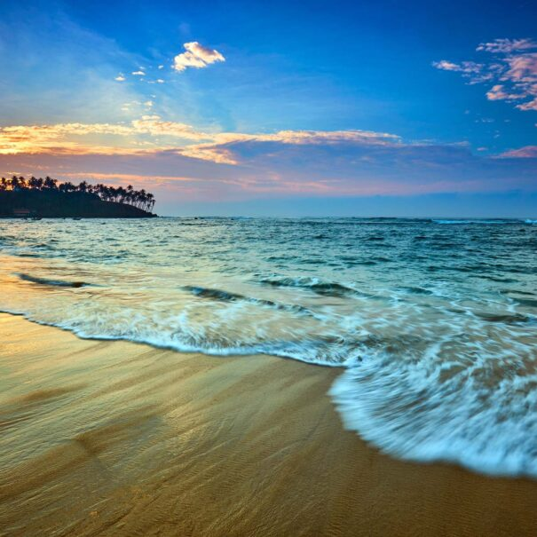
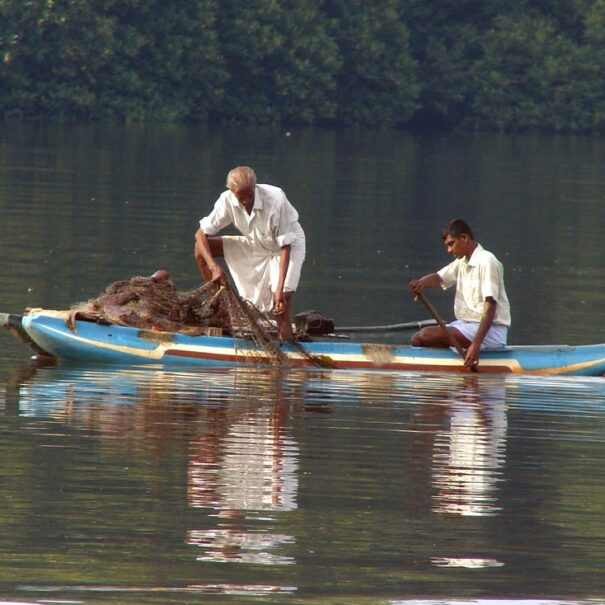

About Benthota
All visitors to Bentota enjoy visiting the Bentota Turtle Hatchery Project. The picturesque golden sands that entice you to our island also offer numerous endangered turtle species, such the Olive Ridley and Leatherback turtles, an alluring nesting site. The project's objective is to preserve and safeguard the eggs against predators and other threats. To find out more about these beautiful and endangered sea creatures, go to the turtle hatchery in Bentota.
Also intresting in benthota
Prepare yourself for a riot of color and dance if you intend to visit the Perahera Festival in Bentota. You can expect to see elephants, torch-bearers, fire jugglers, and tom-tom beaters in addition to the traditional performances. The mesmerizing procession usually happens in the late evening, usually between 11 pm and 1 am. The parade typically moves from the Galapatha Temple towards Colombo along the Galle Road. The march reverses course and travels back toward the temple after traveling about 3–4 kilometres. For the greatest views, stake out a location along the Galle Road.
-

- Benthota Beach
- Benthota river
Bentota is hailed as a prime resort town with no less than 15 Star class Hotels packed together and countless other less than 10 rooms boutique style hotels with sun, surf, and sand. It is located just 45 minutes from Colombo along the Southern Expressway. Bentota has always been known as the water sport capital of Sri Lanka, with the hoteliers in the area actively promoting water sports from adrenaline-filled speed boat and jet ski riding, wind surfing, boogie boarding, water skiing, and kite surfing, to a leisurely ride on a banana boat for the family & kids. This gives the visitor an ideal chance to stay in one and enjoy many different above-water activities.
One of Bentota's most significant geographical characteristics is the Bentota River, which is a well-liked destination for day trips from Colombo and hotels on the west coast of Sri Lanka. The Bentota beach resort is more well-known than the Bentota boat safari, though. Due to its neighboring equivalent, the Madu riverboat estuary, which is the most well-known river safari location on the island, its significance is usually disregarded. Most Colombo-to-Bentota day trips involve a boat ride. However, the boat ride usually takes place near Madu Estuary and not at Bentota River.